Apache NetBeans
Apache NetBeansLatest release
JavaCC Lexer Generator Integration Tutorial for the NetBeans Platform
| This tutorial needs a review. You can edit it in GitHub following these contribution guidelines. |
This tutorial shows you how to generate a lexer with JavaCC and use it to create editor features for applications created on top of the NetBeans Platform.
For troubleshooting purposes, you are welcome to download the completed tutorial source code.
| Though some explanations of JavaCC are given in this tutorial, the focus here is not on JavaCC as such. This is NOT a JavaCC tutorial. For background information and a thorough understanding of JavaCC, see the related website, http://java.net/projects/javacc. The intended audience of this tutorial is the JavaCC user who would like to integrate a generated JavaCC lexer into NetBeans IDE or into another application created atop the NetBeans Platform. In this tutorial, JavaCC is discussed only in so far as it is needed to set up a scenario for using the related NetBeans APIs. |
Introduction
JavaCC is a generator for Java lexers and Java parsers. A Java lexer and parser generator is a tool that reads a grammar specification and converts it to a Java program that can recognize matches to the grammar.
This tutorial focuses specifically on lexers. Lexical analysis, or "lexing", is the process of converting a sequence of characters into a sequence of tokens. Functionality that performs lexical analysis is called a lexical analyzer, a lexer, or a scanner. In this tutorial, the term "lexer" will be used. A lexer typically exists as a single function called by a parser. For example, while a typical lexer recognizes parentheses as tokens, it does nothing to ensure that an opening parentheses is matched by a closing parentheses, which is a task for a parser.
Part 2 of this tutorial, the JavaCC Parser Generator Integration Tutorial, shows you how to create a parser that parses the same text that the lexer in this tutorial lexes.
The NetBeans Platform provides hooks for integrating a lexer into your own Java desktop application on the NetBeans Platform. For example, in this tutorial, you use a sample grammar specification provided by JavaCC to generate a lexer and use it to create syntax coloring in an editor for a simplified Java language defined by the sample grammar specification:
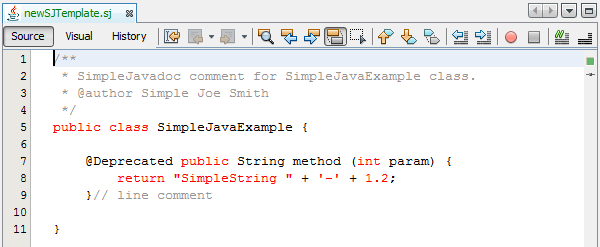
The principles you learn in this tutorial should help you integrate a JavaCC-based lexer of your own.
Creating the Module
In this section, we use a wizard to create the source structure that every NetBeans module requires. The source structure consists of certain folders in specific places and a set of files that are always needed. For example, every NetBeans module requires a nbproject folder, which holds the project’s metadata.
-
Choose File > New Project (Ctrl-Shift-N). Under Categories, select NetBeans Modules. Under Projects, select Module. Click Next.
1.
In the Name and Location panel, type SimpleJava in Project Name. Change the Project Location to any directory on your computer. Click Next.
-
In the Basic Module Configuration panel, type
org.simplejavaas the Code Name Base. Click Finish.
The IDE creates the SimpleJava project:
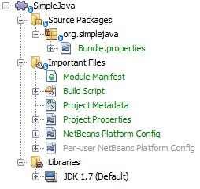
The project contains all of your sources and project metadata, such as the project’s Ant build script. The project opens in the IDE. You can view its logical structure in the Projects window (Ctrl-1) and its file structure in the Files window (Ctrl-2).
Recognizing SJ Files
In this section, we use a wizard to create the classes necessary for recognizing "SimpleJava" files, for which we will create the new "text/x-sj" MIME type, which will recognize files with ".sj" as their file extension.
| For details on the steps below, follow the File Type Integration Tutorial. |
-
Right-click the project node and choose New > Other > Module Development > File Type.
-
In the File Recognition panel, do the following:
-
Type
text/x-sjin the MIME Type edit box. -
Type
sj SJin the by Filename Extension edit box.
-
The File Recognition panel should now look as follows:
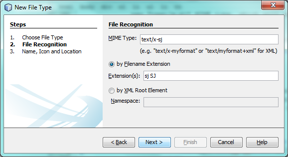
Click Next.
-
In the Name and Location panel, type
SJas the Class Name Prefix and browse to any 16x16 pixel image file as the new file type’s icon, as shown below.
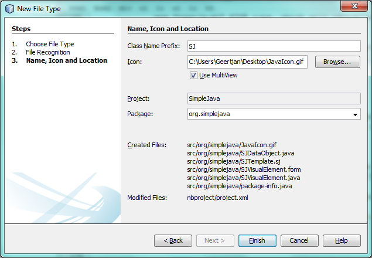
Note: You can use any icon of a 16x16 pixel dimension. If you like, you can right-click on this one and save it locally, and then specify it in the wizard step above:
-
Click Finish. The Projects window should now look as follows:
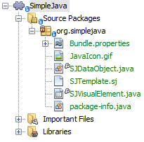
The newly generated files above are described in the File Type Integration Tutorial.
-
Right-click the module and choose Run. The application starts up, installing your module. Make sure to create a few files on disk with ".sj" as the file extension. The content of these files is irrelevant at this stage. In the application, once it has started up, go to the Favorites window (Ctrl-3) and open a few of the files that have ".sj" as their file extension.
You should see your icon is shown for the file type, the Actions registered via the annotations in the DataObject are shown when you right-click the file in the Favorites window, and three tabs are shown in the editor (the source tab, the visual tab, and the local history tab):
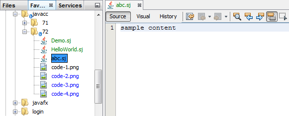
Create a new Java project and then go to the New File dialog, where you should see that your template has been registered:
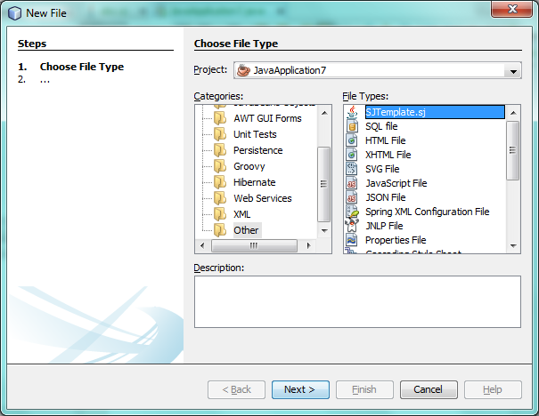
You now have a basic file type recognition infrastructure set up. In the next section, we generate a lexer via JavaCC and then use it to add syntax coloring for the SJ file type.
Generating a Lexer from JavaCC
Let’s now use JavaCC to generate a lexer!
-
Download "javacc-5.0.zip" from http://java.net/projects/javacc/downloads and unpack it to a folder somewhere. In this section, for purposes of this example, we will use the grammar specified in the
Java1.5.jjfile:
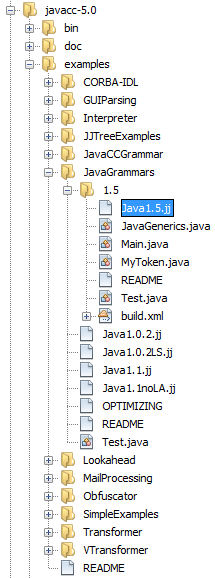
| You can try to use a different version of JavaCC, but there could be differences in the generated files, making the result incompatible with the sections that follow. |
-
Create a new package named
org.simplejava.jcclexerin your project. Copy the two files mentioned above,Java1.5.jjandToken.java, into the new package:
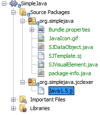
In the next steps, we’re going to tweak the Java1.5.jj file so that it fits our specific needs.
-
Firstly, we need to make sure that the classes that JavaCC will generate for us will be generated into the correct package, that is, the package where we copied the two files above. Add "package org.simplejava.jcclexer;" to
Java1.5.jjfile after the "PARSER_BEGIN(JavaParser)" line, so that the files will be generated in the correct package:
PARSER_BEGIN(JavaParser)
*package org.simplejava.jcclexer;*
import java.io.*;-
The
Java1.5.jjfile contains the descriptions of tokens for the Java parser. That’s nearly what we need for our own Java lexer, though there are some differences. The lexer defined for the parser hides some types of tokens, such as comments and whitespaces. However, we need to see such tokens in the NetBeans lexer because we want to define special colors for comments. Therefore, we need to change that in our JavaCC file.-
Change:
-
SKIP :
{
" "
| "\t"
| "\n"
| "\r"
| "\f"
}to:
TOKEN :
{
< WHITESPACE:
" "
| "\t"
| "\n"
| "\r"
| "\f">
}-
For the same reason, change all SPECIAL_TOKEN definitions:
SPECIAL_TOKEN :
{
<SINGLE_LINE_COMMENT: "//" (~["\n","\r"])* ("\n" | "\r" | "\r\n")?>
}
<IN_FORMAL_COMMENT>
SPECIAL_TOKEN :
{
<FORMAL_COMMENT: "*/" > : DEFAULT
}
<IN_MULTI_LINE_COMMENT>
SPECIAL_TOKEN :
{
<MULTI_LINE_COMMENT: "*/" > : DEFAULT
}to TOKEN definitions:
TOKEN :
{
<SINGLE_LINE_COMMENT: "//" (~["\n","\r"])* ("\n" | "\r" | "\r\n")?>
}
<IN_FORMAL_COMMENT>
TOKEN :
{
<FORMAL_COMMENT: "*/" > : DEFAULT
}
<IN_MULTI_LINE_COMMENT>
TOKEN :
{
<MULTI_LINE_COMMENT: "*/" > : DEFAULT
}-
Delete this section, we will not need it in this tutorial:
/* >'s need special attention due to generics syntax. */
TOKEN :
{
< RUNSIGNEDSHIFT: ">>>" >
{
matchedToken.kind = GT;
((MyToken)matchedToken).realKind = RUNSIGNEDSHIFT;
input_stream.backup(2);
matchedToken.image = ">";
}
| < RSIGNEDSHIFT: ">>" >
{
matchedToken.kind = GT;
((MyToken)matchedToken).realKind = RSIGNEDSHIFT;
input_stream.backup(1);
matchedToken.image = ">";
}
| < GT: ">" >
}-
Because we will use our
Java1.5.jjgrammar file to create a lexer only, we can simplify it. Add this line, which sets the BUILD_PARSER property to false:
options {
JAVA_UNICODE_ESCAPE = true;
ERROR_REPORTING = false;
STATIC = false;
COMMON_TOKEN_ACTION = false;
TOKEN_FACTORY = "*Token*";
JDK_VERSION = "1.5";
*BUILD_PARSER = false;*
}
Also change MyToken to Token , as you can see above.
|
-
Part of the
Java1.5.jjfile is obsolete for our purposes, so let’s delete some sections. Firstly, keep the PARSER_BEGIN and PARSER_END sections, but delete the JavaParser class body, so that you’re left with exactly this:
PARSER_BEGIN(JavaParser)
package org.simplejava.jcclexer;
public class JavaParser {}
PARSER_END(JavaParser)| Though the parser start and end lines remain, the body of the class should now be empty and have exactly the content shown above. |
Also delete everything from these lines down to the end of the file:
/*****************************************
* THE JAVA LANGUAGE GRAMMAR STARTS HERE *
*****************************************/-
The
Java1.5.jjfile is ready now and we can "compile" it from the command line. Do so by starting in the directory where the JavaCC file is found, then invoke the JavaCC executable, passing in the file:
C:\tutorials\SimpleJava\src\org\simplejava\jcclexer>C:\javacc\javacc-5.0\bin\javacc Java1.5.jjOn Unix systems:
cd /tutorials/simplejava/src/org/simplejava/jcclexer /myjavacc/bin/javacc Java1.5.jjThe command line should show the following:
Java Compiler Compiler Version 5.0 (Parser Generator)
(type "javacc" with no arguments for help)
Reading from file Java1.5.jj . . .
File "TokenMgrError.java" does not exist. Will create one.
File "ParseException.java" does not exist. Will create one.
File "Token.java" does not exist. Will create one.
File "JavaCharStream.java" does not exist. Will create one.
Parser generated successfully.The result should be as follows:
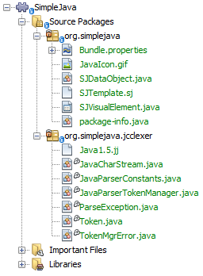
| As you can see, JavaCC has generated several files, all of which should be compilable, that is, there should be no red error marks in any of the generated files. |
You’ve now completed the JavaCC part of the tutorial. The time has come to use the generated files to create a new NetBeans Lexer plugin.
Integrating the JavaCC Lexer with NetBeans APIs
In this section, we take the files generated in the previous section and integrate them with the NetBeans Lexer API.
-
In the Projects window, right-click the Libraries node, and choose Add Module Dependency, as shown below:
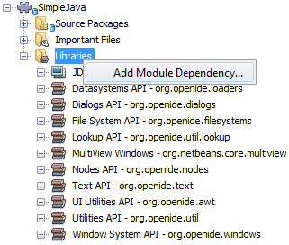
Look for the "Lexer" module in the list:
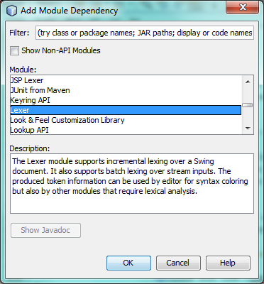
When you click OK, you should see the "Lexer" module is now a dependency in your module:
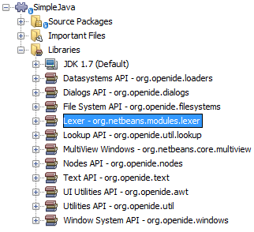
-
In your module, create a new package named
org.simplejava.lexer.
-
The first class you need to implement is
org.netbeans.api.lexer.TokenId.TokenIdrepresents one type of token. It has three properties:-
name.Unique name of the token type, such as"KEYWORD_IF". -
id.Unique number. -
primaryCategory.Used for sharing a token coloring among multiple token types.
-
Create a class named SJTokenId and define it as follows:
package org.simplejava.lexer;
import org.netbeans.api.lexer.TokenId;
public class SJTokenId implements TokenId {
private final String name;
private final String primaryCategory;
private final int id;
SJTokenId(
String name,
String primaryCategory,
int id) {
this.name = name;
this.primaryCategory = primaryCategory;
this.id = id;
}
@Override
public String primaryCategory() {
return primaryCategory;
}
@Override
public int ordinal() {
return id;
}
@Override
public String name() {
return name;
}
}-
The next class you need to implement is
org.netbeans.spi.lexer.LanguageHierarchy.LanguageHierarchyprovides a list of token types for our language and creates a new instance of our lexer.
Create a class named SJLanguageHierarchy and define it as follows:
package org.simplejava.lexer;
import java.util.*;
import org.netbeans.spi.lexer.LanguageHierarchy;
import org.netbeans.spi.lexer.Lexer;
import org.netbeans.spi.lexer.LexerRestartInfo;
public class SJLanguageHierarchy extends LanguageHierarchy<SJTokenId> {
private static List<SJTokenId> tokens;
private static Map<Integer, SJTokenId> idToToken;
private static void init() {
tokens = Arrays.<SJTokenId>asList(new SJTokenId[]{
//[PENDING]
});
idToToken = new HashMap<Integer, SJTokenId>();
for (SJTokenId token : tokens) {
idToToken.put(token.ordinal(), token);
}
}
static synchronized SJTokenId getToken(int id) {
if (idToToken == null) {
init();
}
return idToToken.get(id);
}
@Override
protected synchronized Collection<SJTokenId> createTokenIds() {
if (tokens == null) {
init();
}
return tokens;
}
@Override
protected synchronized Lexer<SJTokenId> createLexer(LexerRestartInfo<SJTokenId> info) {
return new SJLexer(info);
}
@Override
protected String mimeType() {
return "text/x-sj";
}
}
Because the SJLexer class does not yet exist, a red error mark is shown in the NetBeans editor in the new declaration for the non-existent SJLexer class. You will define this class in the next step.
|
-
The last class you need to implement is
org.netbeans.spi.lexer.Lexer.Lexerreads input text and returns tokens for it. In our case, the Lexer implementation needs to delegate to the lexer generated by JavaCC.
Create a class named SJLexer and define it as follows:
package org.simplejava.lexer;
import org.netbeans.spi.lexer.Lexer;
import org.netbeans.spi.lexer.LexerRestartInfo;
import org.simplejava.jcclexer.JavaCharStream;
import org.simplejava.jcclexer.JavaParserTokenManager;
import org.simplejava.jcclexer.Token;
class SJLexer implements Lexer<SJTokenId> {
private LexerRestartInfo<SJTokenId> info;
private JavaParserTokenManager javaParserTokenManager;
SJLexer(LexerRestartInfo<SJTokenId> info) {
this.info = info;
JavaCharStream stream = new JavaCharStream(info.input());
javaParserTokenManager = new JavaParserTokenManager(stream);
}
@Override
public org.netbeans.api.lexer.Token<SJTokenId> nextToken() {
Token token = javaParserTokenManager.getNextToken();
if (info.input().readLength() < 1) {
return null;
}
return info.tokenFactory().createToken(SJLanguageHierarchy.getToken(token.kind));
}
@Override
public Object state() {
return null;
}
@Override
public void release() {
}
}
The class above does not compile at the moment because JavaCharStream has not been defined to receive a LexerInput . In the next step, we rewrite the JavaCharStream class generated by JavaCC. Our new version of JavaCharStream , listed in the next step, reads input characters from org.netbeans.spi.lexer.LexerInput , instead of the standard InputStream .
|
-
Because we are now using
LexerInputinstead ofInputStream, another change inJavaCharStreamis needed because theJavaParserTokenManagercreated by JavaCC is designed to work with ajava.io.Readerand recognizes a <EOF> when theio.Readerthrows anIOException. However, though theLexerInputclass logically corresponds tojava.io.Reader, itsread()method does not throw a checked exception. Hence theBeginTokenand thereadCharmethods below validate the returned character and throw the exception, if necesary.
package org.simplejava.jcclexer;
import java.io.IOException;
import java.io.InputStream;
import java.io.Reader;
import java.io.UnsupportedEncodingException;
import org.netbeans.spi.lexer.LexerInput;
public class JavaCharStream {
private LexerInput input;
static boolean staticFlag;
public JavaCharStream(LexerInput input) {
this.input = input;
}
JavaCharStream(Reader stream, int i, int i0) {
throw new UnsupportedOperationException("Not yet implemented");
}
JavaCharStream(InputStream stream, String encoding, int i, int i0) throws UnsupportedEncodingException {
throw new UnsupportedOperationException("Not yet implemented");
}
char BeginToken() throws IOException {
return readChar();
}
String GetImage() {
return input.readText().toString();
}
public char[] GetSuffix(int len) {
if (len > input.readLength()) {
throw new IllegalArgumentException();
}
return input.readText(input.readLength() - len, input.readLength()).toString().toCharArray();
}
void ReInit(Reader stream, int i, int i0) {
throw new UnsupportedOperationException("Not yet implemented");
}
void ReInit(InputStream stream, String encoding, int i, int i0) throws UnsupportedEncodingException {
throw new UnsupportedOperationException("Not yet implemented");
}
void backup(int i) {
input.backup(i);
}
int getBeginColumn() {
return 0;
}
int getBeginLine() {
return 0;
}
int getEndColumn() {
return 0;
}
int getEndLine() {
return 0;
}
char readChar() throws IOException {
int result = input.read();
if (result == LexerInput.EOF) {
throw new IOException("LexerInput EOF");
}
return (char) result;
}
}-
After replacing the generated
JavaCharStreamwith the code in the previous step, everything should compile and your module structure should be as follows:
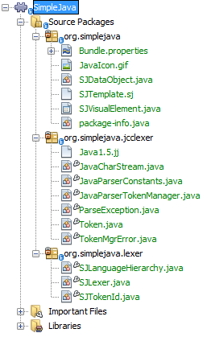
You now have an implementation of the NetBeans Lexer API based on a JavaCC lexer generated from a JavaCC grammar definition. In the next section, you register your NetBeans lexer so that the NetBeans Platform infrastructure can find it and load it into the application.
Registering the NetBeans Lexer
You now have a NetBeans lexer. We need to register it so that it can be used.
-
In
SJTokenId, define the following method, which returns an instance oforg.netbeans.api.lexer.Language:
public static Language<SJTokenId> getLanguage() {
return new SJLanguageHierarchy().language();
}-
The instance created statically above needs to be called from somewhere. The call is done from the
layer.xmlfile, within theCslPluginsfolder, where you register the class below as a language instance, via the class annotation@LanguageRegistration:
package org.simplejava;
import org.netbeans.api.lexer.Language;
import org.netbeans.modules.csl.spi.DefaultLanguageConfig;
import org.netbeans.modules.csl.spi.LanguageRegistration;
import org.simplejava.lexer.SJTokenId;
@LanguageRegistration(mimeType = "text/x-sj")
public class SJLanguage extends DefaultLanguageConfig {
@Override
public Language getLexerLanguage() {
return SJTokenId.getLanguage();
}
@Override
public String getDisplayName() {
return "SJ";
}
}For the class above to compile, you need a new dependency in your module:
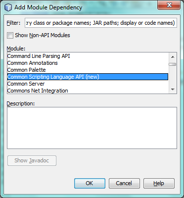
When the module containing the above class is built, the generated-layer.xml file in the module’s 'build' folder, which is visible in the Files window (Ctrl - 2), contains many new entries, providing many default features for your language:
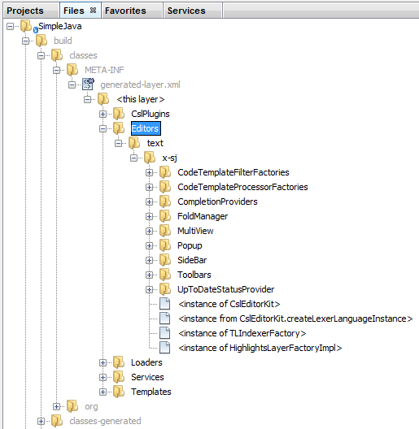
Enabling Lexer Support in NetBeans Platform Applications
In NetBeans IDE, lexer support is enabled via the "Lexer to NetBeans Bridge" module. This module uses the MIME Lookup API to search for language descriptions registered by modules such as the one you are creating in this tutorial. If you are creating lexer support for your own application created on the NetBeans Platform, you explictly need to add the enablement module yourself, as explained below.
-
Right-click the application and choose Properties to open the Project Properties dialog.
-
In the Libraries tab of the Project Properties dialog, expand the "ide" cluster, and select "Lexer to NetBeans Bridge". The code name base for this module is
org.netbeans.modules.lexer.nbbridge.
Now your NetBeans Platform application will be able to find the lexer support that you are creating in this tutorial.
Defining Tokens and Assigning Colors
Let’s now work with the actual tokens that we’re going to need. First, we’ll update the SJLanguageHierarchy with our tokens. After that, we’ll map the tokens to fonts and colors. Finally, we’ll register our new files in the virtual filesystem of the application we’re working on.
-
Look in the generated
JavaParserConstantsfile and notice the tokens that have been generated by JavaCC.
public interface JavaParserConstants {
int EOF = 0;
int WHITESPACE = 1;
int SINGLE_LINE_COMMENT = 4;
int FORMAL_COMMENT = 5;
int MULTI_LINE_COMMENT = 6;
int ABSTRACT = 8;
int ASSERT = 9;
int BOOLEAN = 10;
int BREAK = 11;
int BYTE = 12;
...
...
...Now tweak and then copy the tokens above into your SJLanguageHierarchy file:
tokens = Arrays.asList(new SJTokenId[]{
new SJTokenId("EOF", "whitespace", 0),
new SJTokenId("WHITESPACE", "whitespace", 1),
new SJTokenId("SINGLE_LINE_COMMENT", "comment", 4),
new SJTokenId("FORMAL_COMMENT", "comment", 5),
new SJTokenId("MULTI_LINE_COMMENT", "comment", 6),
new SJTokenId("ABSTRACT", "keyword", 8),
new SJTokenId("ASSERT", "keyword", 9),
new SJTokenId("BOOLEAN", "keyword", 10),
new SJTokenId("BREAK", "keyword", 11),
new SJTokenId("BYTE", "keyword", 12),
...
...
...See the Appendix for the complete list of tokens. Copy them from the appendix into your module.
-
Next, we need to map the categories to fonts and colors. This is done declaratively, in an XML file, where we list the categories and then declare the fonts and colors that should be applied. In the main package of the module, that is,
org.simplejava, create a new XML file namedFontAndColors.xml, with the following content:
<!DOCTYPE fontscolors PUBLIC
"-//NetBeans//DTD Editor Fonts and Colors settings 1.1//EN"
"https://netbeans.org/dtds/EditorFontsColors-1_1.dtd">
<fontscolors>
<fontcolor name="character" default="char"/>
<fontcolor name="errors" default="error"/>
<fontcolor name="identifier" default="identifier"/>
<fontcolor name="keyword" default="keyword" foreColor="red"/>
<fontcolor name="literal" default="keyword" />
<fontcolor name="comment" default="comment"/>
<fontcolor name="number" default="number"/>
<fontcolor name="operator" default="operator"/>
<fontcolor name="string" default="string"/>
<fontcolor name="separator" default="separator"/>
<fontcolor name="whitespace" default="whitespace"/>
<fontcolor name="method-declaration" default="method">
<font style="bold" />
</fontcolor>
</fontscolors>This file defines how to visualize the tokens produced by the lexer. The fontcolor tag properties are as follows:
-
name: Name or primaryCategory of your token (or tokens).
-
default: Name of default coloring. All properties that are not defined explicitly are inherited from this default coloring. Default coloring is customizable in the Options window.
-
foreColor: Foreground color.
-
bgColor: Background color.
-
underline: Underlined color. Token will be underlined if specified.
-
strikeThrough: Strike through color.
-
waveUnderlined: Wave underlined color.
The fontcolor tag can contain a nested font tag. The font tag has the following properties:
-
name: Name of font.
-
size: Font size.
-
style: Bold or italic style.
1.
Copy the following code into the SJTemplate.sj file. Not only will you use the template file, that is, SJTemplate.sj , as a template in the New File dialog, but also as example text to be shown in the Options window, where the user will be able to see the effect of their customized fonts and colors.
/**
* SimpleJavadoc comment for
[source,java]SimpleJavaExample
class.
* @author Simple Joe Smith
*/
public class SimpleJavaExample {
@Deprecated public String method (int param) {
return "SimpleString " + '-' + 1.2;
}// line comment
}
-
Add the following key/value pairs into the
Bundle.propertiesfile of the main package, that is, theBundle.propertiesfile found inorg.simplejava:
text/x-sj=Simple Java
character=Character
errors=Error
identifier=Identifier
keyword=Keyword
literal=Literal
comment=Comment
number=Number
operator=Operator
string=String
separator=Separator
whitespace=Whitespace
method-declaration=Method DeclarationThe above values will be shown in the Options window, in the panel where the user will be able to change the predefined fonts and colors per category.
-
Right-click the
org.simplejavanode, choose New | Other, and then create a new layer file, from the category shown below:
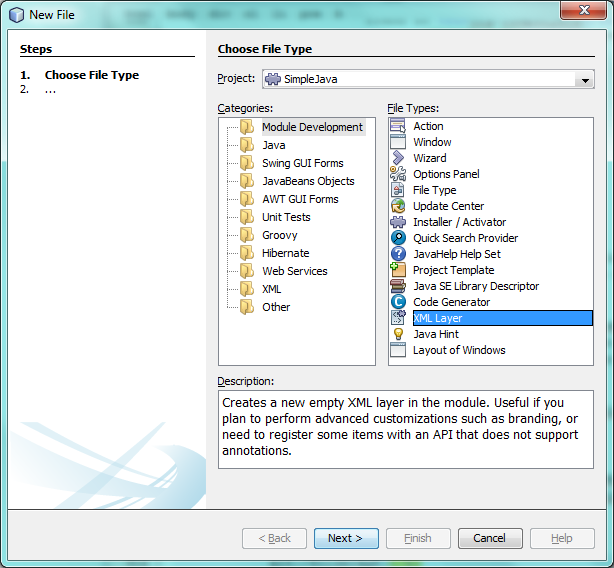
Click Next above and Finish. A new XML file is created and registered in the manifest file of the module. The XML file defines the contributions of the module to the virtual filesystem of the application of which it is a part.
-
Register the
FontAndColors.xmlfile, as well as the example file into thelayer.xmlfile, by replacing the default content of the file with the following:
<?xml version="1.0" encoding="UTF-8"?>
<!DOCTYPE filesystem PUBLIC "-//NetBeans//DTD Filesystem 1.2//EN" "https://netbeans.org/dtds/filesystem-1_2.dtd">
<filesystem>
<folder name="Editors">
<folder name="text">
<folder name="x-sj">
<attr name="SystemFileSystem.localizingBundle" stringvalue="org.simplejava.Bundle"/>
<folder name="FontsColors">
<folder name="NetBeans">
<folder name="Defaults">
<file name="FontAndColors.xml" url="FontAndColors.xml">
<attr name="SystemFileSystem.localizingBundle" stringvalue="org.simplejava.Bundle"/>
</file>
</folder>
</folder>
</folder>
</folder>
</folder>
</folder>
<folder name="OptionsDialog">
<folder name="PreviewExamples">
<folder name="text">
<file name="x-sj" url="SJTemplate.sj"/>
</folder>
</folder>
</folder>
</filesystem>-
Check that your module now has this content:
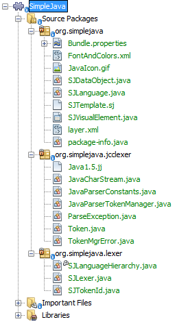
Run the module, open an SJ file, and you should see the correct coloring, as defined in the files above:
Look in the Options window, under the Tools menu, and you should be able to change the fonts and colors for the file type.
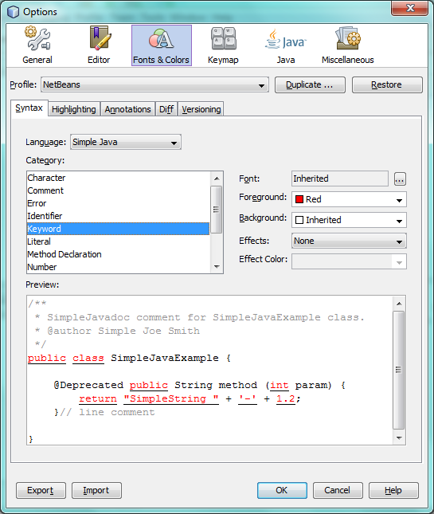
Next Steps
This tutorial is the official version of the first part of http://wiki.netbeans.org/How_to_create_support_for_a_new_language, which, aside from being a rough draft, is partly obsolete and out of date for the NetBeans Platform.
Part 2 of this tutorial, the JavaCC Parser Generator Integration Tutorial, shows you how to create a parser that parses the same text that the lexer in this tutorial lexes.
For more information about creating and developing NetBeans modules, see the following resources:
Appendix
The complete list of tokens, referred to in step 1 of the section Defining Tokens and Assigning Colors above, is as follows:
tokens = Arrays.asList(new SJTokenId[]{
new SJTokenId("EOF", "whitespace", 0),
new SJTokenId("WHITESPACE", "whitespace", 1),
new SJTokenId("SINGLE_LINE_COMMENT", "comment", 4),
new SJTokenId("FORMAL_COMMENT", "comment", 5),
new SJTokenId("MULTI_LINE_COMMENT", "comment", 6),
new SJTokenId("ABSTRACT", "keyword", 8),
new SJTokenId("ASSERT", "keyword", 9),
new SJTokenId("BOOLEAN", "keyword", 10),
new SJTokenId("BREAK", "keyword", 11),
new SJTokenId("BYTE", "keyword", 12),
new SJTokenId("CASE", "keyword", 13),
new SJTokenId("CATCH", "keyword", 14),
new SJTokenId("CHAR", "keyword", 15),
new SJTokenId("CLASS", "keyword", 16),
new SJTokenId("CONST", "keyword", 17),
new SJTokenId("CONTINUE", "keyword", 18),
new SJTokenId("_DEFAULT", "keyword", 19),
new SJTokenId("DO", "keyword", 20),
new SJTokenId("DOUBLE", "keyword", 21),
new SJTokenId("ELSE", "keyword", 22),
new SJTokenId("ENUM", "keyword", 23),
new SJTokenId("EXTENDS", "keyword", 24),
new SJTokenId("FALSE", "keyword", 25),
new SJTokenId("FINAL", "keyword", 26),
new SJTokenId("FINALLY", "keyword", 27),
new SJTokenId("FLOAT", "keyword", 28),
new SJTokenId("FOR", "keyword", 29),
new SJTokenId("GOTO", "keyword", 30),
new SJTokenId("IF", "keyword", 31),
new SJTokenId("IMPLEMENTS", "keyword", 32),
new SJTokenId("IMPORT", "keyword", 33),
new SJTokenId("INSTANCEOF", "keyword", 34),
new SJTokenId("INT", "keyword", 35),
new SJTokenId("INTERFACE", "keyword", 36),
new SJTokenId("LONG", "keyword", 37),
new SJTokenId("NATIVE", "keyword", 38),
new SJTokenId("NEW", "keyword", 39),
new SJTokenId("NULL", "keyword", 40),
new SJTokenId("PACKAGE", "keyword", 41),
new SJTokenId("PRIVATE", "keyword", 42),
new SJTokenId("PROTECTED", "keyword", 43),
new SJTokenId("PUBLIC", "keyword", 44),
new SJTokenId("RETURN", "keyword", 45),
new SJTokenId("SHORT", "keyword", 46),
new SJTokenId("STATIC", "keyword", 47),
new SJTokenId("STRICTFP", "keyword", 48),
new SJTokenId("SUPER", "keyword", 49),
new SJTokenId("SWITCH", "keyword", 50),
new SJTokenId("SYNCHRONIZED", "keyword", 51),
new SJTokenId("THIS", "keyword", 52),
new SJTokenId("THROW", "keyword", 53),
new SJTokenId("THROWS", "keyword", 54),
new SJTokenId("TRANSIENT", "keyword", 55),
new SJTokenId("TRUE", "keyword", 56),
new SJTokenId("TRY", "keyword", 57),
new SJTokenId("VOID", "keyword", 58),
new SJTokenId("VOLATILE", "keyword", 59),
new SJTokenId("WHILE", "keyword", 60),
new SJTokenId("INTEGER_LITERAL", "literal", 61),
new SJTokenId("DECIMAL_LITERAL", "literal", 62),
new SJTokenId("HEX_LITERAL", "literal", 63),
new SJTokenId("OCTAL_LITERAL", "literal", 64),
new SJTokenId("FLOATING_POINT_LITERAL", "literal", 65),
new SJTokenId("DECIMAL_FLOATING_POINT_LITERAL", "literal", 66),
new SJTokenId("DECIMAL_EXPONENT", "number", 67),
new SJTokenId("HEXADECIMAL_FLOATING_POINT_LITERAL", "literal", 68),
new SJTokenId("HEXADECIMAL_EXPONENT", "number", 69),
new SJTokenId("CHARACTER_LITERAL", "literal", 70),
new SJTokenId("STRING_LITERAL", "literal", 71),
new SJTokenId("IDENTIFIER", "identifier", 72),
new SJTokenId("LETTER", "literal", 73),
new SJTokenId("PART_LETTER", "literal", 74),
new SJTokenId("LPAREN", "operator", 75),
new SJTokenId("RPAREN", "operator", 76),
new SJTokenId("LBRACE", "operator", 77),
new SJTokenId("RBRACE", "operator", 78),
new SJTokenId("LBRACKET", "operator", 79),
new SJTokenId("RBRACKET", "operator", 80),
new SJTokenId("SEMICOLON", "operator", 81),
new SJTokenId("COMMA", "operator", 82),
new SJTokenId("DOT", "operator", 83),
new SJTokenId("AT", "operator", 84),
new SJTokenId("ASSIGN", "operator", 85),
new SJTokenId("LT", "operator", 86),
new SJTokenId("BANG", "operator", 87),
new SJTokenId("TILDE", "operator", 88),
new SJTokenId("HOOK", "operator", 89),
new SJTokenId("COLON", "operator", 90),
new SJTokenId("EQ", "operator", 91),
new SJTokenId("LE", "operator", 92),
new SJTokenId("GE", "operator", 93),
new SJTokenId("NE", "operator", 94),
new SJTokenId("SC_OR", "operator", 95),
new SJTokenId("SC_AND", "operator", 96),
new SJTokenId("INCR", "operator", 97),
new SJTokenId("DECR", "operator", 98),
new SJTokenId("PLUS", "operator", 99),
new SJTokenId("MINUS", "operator", 100),
new SJTokenId("STAR", "operator", 101),
new SJTokenId("SLASH", "operator", 102),
new SJTokenId("BIT_AND", "operator", 103),
new SJTokenId("BIT_OR", "operator", 104),
new SJTokenId("XOR", "operator", 105),
new SJTokenId("REM", "operator", 106),
new SJTokenId("LSHIFT", "operator", 107),
new SJTokenId("PLUSASSIGN", "operator", 108),
new SJTokenId("MINUSASSIGN", "operator", 109),
new SJTokenId("STARASSIGN", "operator", 110),
new SJTokenId("SLASHASSIGN", "operator", 111),
new SJTokenId("ANDASSIGN", "operator", 112),
new SJTokenId("ORASSIGN", "operator", 113),
new SJTokenId("XORASSIGN", "operator", 114),
new SJTokenId("REMASSIGN", "operator", 115),
new SJTokenId("LSHIFTASSIGN", "operator", 116),
new SJTokenId("RSIGNEDSHIFTASSIGN", "operator", 117),
new SJTokenId("RUNSIGNEDSHIFTASSIGN", "operator", 118),
new SJTokenId("ELLIPSIS", "operator", 119),
new SJTokenId("RUNSIGNEDSHIFT", "operator", 120),
new SJTokenId("RSIGNEDSHIFT", "operator", 121),
new SJTokenId("GT", "operator", 122)
});